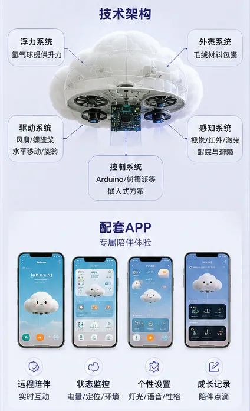

返回运营项目索引
返回运营项目索引O07 / 运营团队 · 文档展示
一朵云Cloud Fly 陪伴机器人
档案封面选自产品方案。
一个人下班回家，打开灯，屋里还是很安静。有时候，你只是想让身边多一点动静，又想保留独处的自在。「一朵云」从这个日常时刻出发，构想了一件能在家中轻轻飘动、偶尔回应你的云朵形陪伴装置。
在我们的设想里，当你坐到沙发上，云朵会低速飘近，避开沿途的障碍，在你身边停下，用柔和的灯光或简短的声音回应。居家办公时，你可以让它安静地待在一旁。手机端则让你查看云朵的状态、调整陪伴模式、记录日常互动，慢慢养成一朵适合自己生活节奏的云。
目前，团队已完成使用场景和交互方案设计。接下来，我们希望通过室内原型测试，看看云朵能否稳定地靠近、停留和避障，也想听听体验者的感受：什么时候希望它靠近，什么时候只想让它安静地待着？

